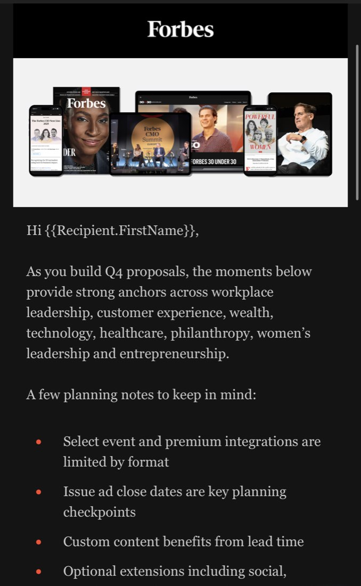

Standards and QA gates
Standards first, on paper: what a program is, what every email has to contain, what counts as launch-ready. QA checklists gate everything before it ships, human or machine made.
Lifecycle standards, prompt libraries, QA checklists, and governance: the operating system that lets a two-person team run 10+ concurrent programs, with custom GPTs doing the trainable work.
Ten-plus lifecycle programs, two people. Anything that lived in someone's head became a bottleneck. AI could take a lot of the repeatable work, but not without guardrails, because it'll produce confident garbage at scale if you let it.
Standards first, on paper: what a program is, what every email has to contain, what counts as launch-ready. QA checklists gate everything before it ships, human or machine made.

Prompt libraries for the recurring work, versioned like anything else we ship. Governance that says what AI is allowed to touch, what needs human review, and who owns the output. Custom ChatGPT Enterprise GPTs trained on those standards, and the trainable work runs through them now.
A two-bucket contractor model: trainable execution in one bucket, real expertise in the other, and outside rates only get paid for the second. And value reporting for the martech stack, so every tool has to show what it contributed.
chatgpt enterprise (custom gpts) / claude code / n8n / smartsheet / monday.com
Campaign work modeled at 149 to 206 specialist hours has been delivered in roughly 71 to 74 hours by one AI-assisted operator: about a 60% reduction, projected to reach about 79% once the lifecycle agents launch. The modeling is against specialist-hour benchmarks, and everything still passes the same QA gate before it ships.